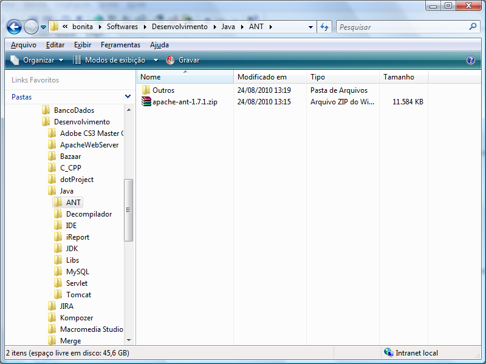
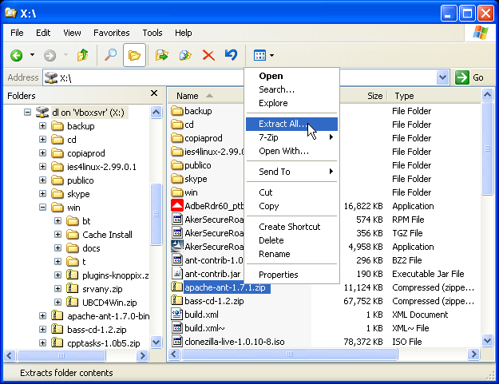
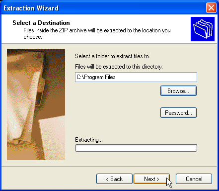
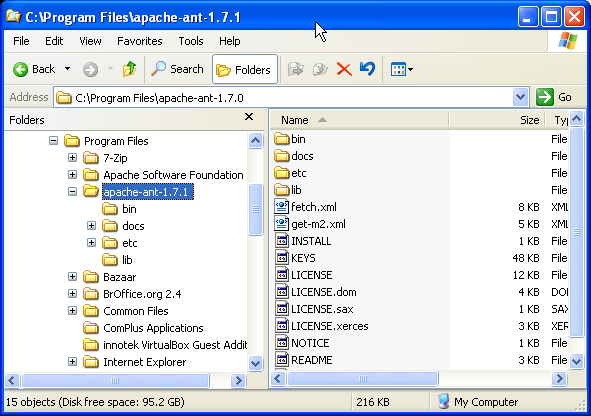
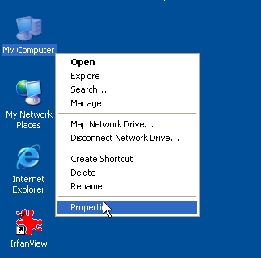
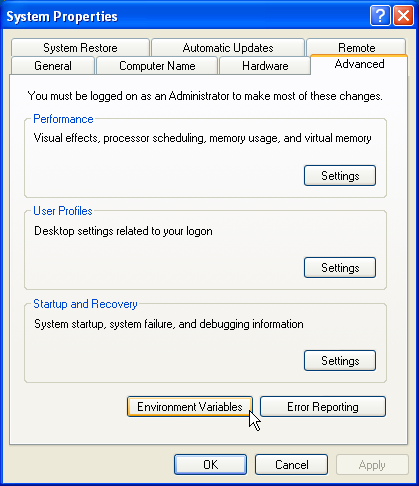
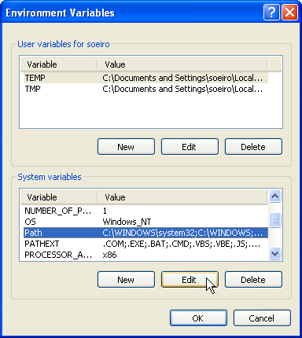
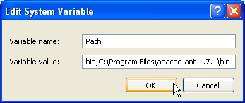
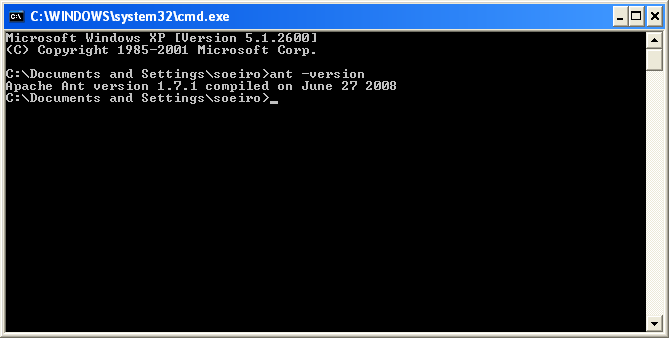

[Documentation Home]
[Installation Home]
Alphalinc Software Development Environment (ASDE) - Ant installation
- Go to \\loira\Softwares\Desenvolvimento\Java\ANT
(or download it from http://ant.apache.org) and copy the
apache-ant-1.7.1.zip file to your computer.
|

Figure 1 - Software folder
|
- Open Windows Explorer, right click on the downloaded file and choose the option Extract All.
|

Figure 2 - Extraction process for the ZIP file
|
|

Figure 3 - Extraction wizard
|
- Select Program Files (or the equivalent in your
Windows version) as the destination folder. Click Next.
|

Figure 4 - Choose destination directory
|
- Open Windows Explorer and browse to C:\Program Files folder. Look for apache-ant-....
Take note of this directory.
|

Figure 5 - Take note of ANT's installation directory
|
- Then, add apache-ant's bin directory (in this example C:\Program Files\apache-ant-1.7.0\bin)
to the system PATH environment variable. Right click on the My Computer Icon and choose Properties.
|

Figure 6 - Right click on My Computer icon
|
- Click on the Advanced tab and then on the Environment Variables button.
|

Figure 7 - Open system environment variables dialog
|
- Select the PATH variable and then click on the Edit button.
|

Figure 8 - Edit the PATH variable
|
- At the end of the value field, add a semicolon ";". add
the full path to the bin directory where ANT.CMD is located (in this example it is
C:\Program Files\apache-ant-1.7.1\bin).
|

Figure 9 - Add ant's bin directory to the PATH variable
|
- Now, test the ANT installation. Every time a Windows environment variable is
created or changed, it only affects the new command line windows. So, close all existing windows
and open a new one, as follows:
|

Figure 10 - Start menu
|
|

Figure 11 - Run a program
|
|

Figure 12 - The new command line window
|
- In the new command line window, type ant -version and watch for the results.
|

Figure 13 - Execute ant -version
|
If you don't see the current version of installed ant, go back and review this
installation process from the start.
If everything was correct, please proceed to the install tomcat step.
This document is the file projectDirectory/Implementation/docs/installation/ant-installation.html
Please feel free to make corrections and commit it to the repository.